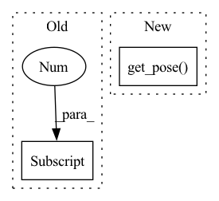

Pattern ID :8708

Before Change
while True:
with utils.stash_objects(object_ids):
mask_v = ri.get_camera_image()[2] == utils.virtual_objects[-1]
with utils.stash_objects(utils.virtual_objects):
rgb, depth, segm = ri.get_camera_image()
mask = segm == object_id
After Change
j_camera = j
while True:
obj_to_world = pybullet_planning.get_pose(object_id)
class_id = utils.get_class_id(object_id)
pcd_file = mercury.datasets.ycb.get_pcd_file(class_id=class_id)
pcd = np.loadtxt(pcd_file)
In pattern: SUPERPATTERN
Frequency: 7
Non-data size: 2
Instances
Fragment ID: 32368365
Project Name: wkentaro/safepicking
Commit Name: 8b3cd5be7c9aeded49c647a2268002d2a51a3418
Time: 2021-04-17
Author: www.kentaro.wada@gmail.com
File Name: examples/baseline/correct.py
M Class Name: AnonimousClass
N Class Name: AnonimousClass
M Method Name: main(0)
N Method Name: main(0)
M Parent Class:
N Parent Class:
M File Name: examples/baseline/correct.py
N File Name: examples/baseline/correct.py
M Start Line: 23
M End Line: 198
N Start Line: 20
N End Line: 223
'>
Before Change
)
grasp_flags, _, object_poses = self.object_state
obj_to_world = object_poses[grasp_flags == 1][0]
obj_to_world = obj_to_world[:3], obj_to_world[3:]
ee_to_world = self.ri.get_pose("tipLink")
obj_to_ee = pp.multiply(pp.invert(ee_to_world), obj_to_world)
After Change
)
grasp_flags, _, object_poses = self.object_state
obj_to_world = pp.get_pose(target_object_id)
ee_to_world = self.ri.get_pose("tipLink")
obj_to_ee = pp.multiply(pp.invert(ee_to_world), obj_to_world)
self.ri.attachments = [
'>
Fragment ID: 32368367
Project Name: wkentaro/safepicking
Commit Name: d476753f6d4c9ddcbbb2b88714afccc22fe2ae36
Time: 2021-07-02
Author: www.kentaro.wada@gmail.com
File Name: examples/target_pick/env.py
M Class Name: PickFromPileEnv
N Class Name: PickFromPileEnv
M Method Name: reset(3)
N Method Name: reset(3)
M Parent Class: Env
N Parent Class: Env
M File Name: examples/target_pick/env.py
N File Name: examples/target_pick/env.py
M Start Line: 193
M End Line: 367
N Start Line: 193
N End Line: 366
'>
Before Change
parent_to_world[0], parent_to_world[1]
)
self_to_parent = pybullet.multiplyTransforms(
world_to_parent[0],
world_to_parent[1],
self_to_world[0],
self_to_world[1],
After Change
if parent is None:
obj_to_parent = obj_to_world
else:
parent_to_world = pybullet_planning.get_pose(parent)
world_to_parent = pybullet_planning.invert(parent_to_world)
obj_to_parent = pybullet_planning.multiply(
world_to_parent, obj_to_world
)
'>
Fragment ID: 32368366
Project Name: wkentaro/reorientbot
Commit Name: f750698b9c0be7dffb1f48d75ade4558cd96a80e
Time: 2021-10-26
Author: www.kentaro.wada@gmail.com
File Name: mercury/_pybullet/utils.py
M Class Name: AnonimousClass
N Class Name: AnonimousClass
M Method Name: get_pose(2)
N Method Name: get_pose(4)
M Parent Class:
N Parent Class:
M File Name: mercury/_pybullet/utils.py
N File Name: mercury/_pybullet/utils.py
M Start Line: 120
M End Line: 137
N Start Line: 120
N End Line: 130
'>
Before Change
ee_to_world = mercury.pybullet.get_pose(ri.robot, ri.ee)
pybullet_planning.draw_pose(ee_to_world)
p.resetBasePositionAndOrientation(
cube, ee_to_world[0] + np.array([0, 0, -0.015 - 0.05]), (0, 0, 0, 1)
)
cube_to_world = mercury.pybullet.get_pose(cube)
pybullet_planning.draw_pose(cube_to_world)
After Change
// -------------------------------------------------------------------------
cube = pp.create_box(0.03, 0.05, 0.1, mass=0.1, color=(0, 1, 0, 1))
ee_to_world = ri.get_pose("tipLink")
pp.draw_pose(ee_to_world)
obj_to_ee = ([0, 0, 0.05], [0, 0, 0, 1])
obj_to_world = pp.multiply(ee_to_world, obj_to_ee)
p.resetBasePositionAndOrientation(cube, *obj_to_world)
'>
Fragment ID: 32368376
Project Name: wkentaro/safepicking
Commit Name: d294f0a1b2469bd179de6d78efe38ad72e0193c5
Time: 2021-09-22
Author: www.kentaro.wada@gmail.com
File Name: examples/checks/check_attached_object_ik.py
M Class Name: AnonimousClass
N Class Name: AnonimousClass
M Method Name: main(0)
N Method Name: main(0)
M Parent Class:
N Parent Class:
M File Name: examples/checks/check_attached_object_ik.py
N File Name: examples/checks/check_attached_object_ik.py
M Start Line: 24
M End Line: 91
N Start Line: 24
N End Line: 82